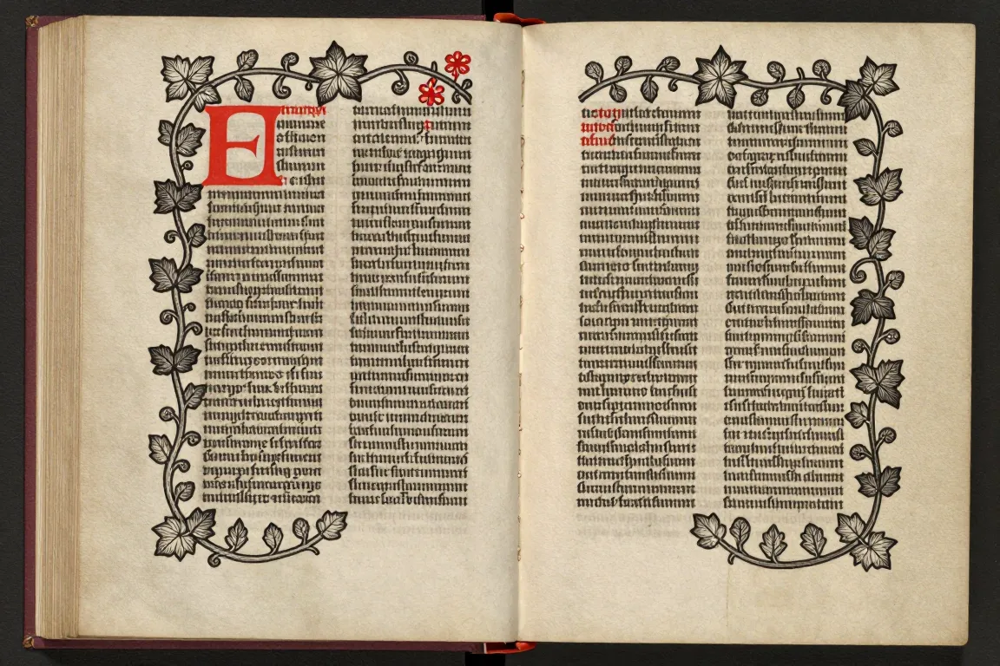

print · 1891–1939 · also: Kelmscott style, Fine press book, Revival printing, Arts and Crafts book
A book printed by hand on handmade paper, in a heavy type cut for the press, with woodcut borders and initials, in black and red. William Morris started the Kelmscott Press in 1891 against the grey, thin books of the steam press; the Doves Press made the same craft plain.

Core thesis
A book is one object: the type, the page, the paper, the ink and the ornament are made together and by hand.
Design principles
Set a dense, dark text page in one heavy roman or gothic type, with little space between the words and the lines.
Use the two pages of an opening as one unit, with margins in the ratio 2:3:4:6 (inner, top, outer, bottom).
Print in a deep black and use red for the headings, the shoulder notes and the initials.
Frame the first page with a woodcut border of leaves and flowers, and start each part with a woodcut initial.
Print on handmade rag paper or vellum, with a clear bite of the type into the sheet.
Bind in plain vellum or linen; the decoration is inside the book, not on the cover.